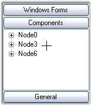
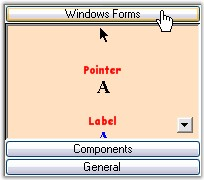

Cursor Settings for GroupBar
The cursor settings of the GroupBar control can be changed using the below given properties.
|
GroupBar Property |
Description |
|
Cursor |
Gets / sets the cursor that is displayed when the mouse pointer is over the control. |
|
[C#]
this.groupBar1.Cursor = System.Windows.Forms.Cursors.Cross; |
|
[VB.NET]
Me.groupBar1.Cursor = System.Windows.Forms.Cursors.Cross |

Figure 882: Cross Cursor displayed on the GroupBar
Cursor Settings for GroupBar Items
Different types of cursors can be set when the mouse pointer is over the GroupBar Items. The cursors available are Mouse, Cross, Help, Hand and so on. The default cursor is 'Arrow'.
|
GroupBar Property |
Description |
|
GroupBarItemCursor |
Specifies the type of cursor that is displayed when the mouse pointer is over the GroupBar Items. The rest of the control will display the standard control cursor. |
|
[C#]
this.groupBar1.GroupBarItemCursor = System.Windows.Forms.Cursors.Hand; |
|
[VB.NET]
Me.groupBar1.GroupBarItemCursor = System.Windows.Forms.Cursors.Hand |

Figure 883: Hand cursor on 'Windows Forms' Item
 Note : The ResetGroupBarItemCursor() method
can be used to reset the cursor when it is displayed over a GroupBar Item.
Note : The ResetGroupBarItemCursor() method
can be used to reset the cursor when it is displayed over a GroupBar Item.